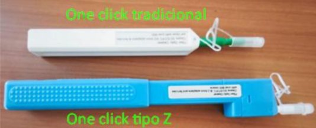
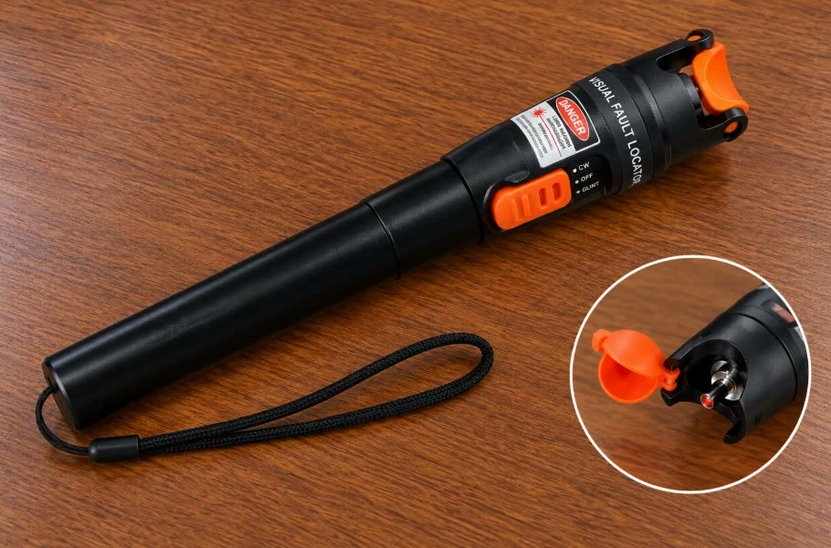
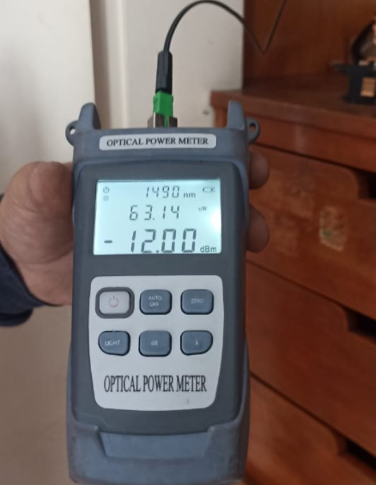
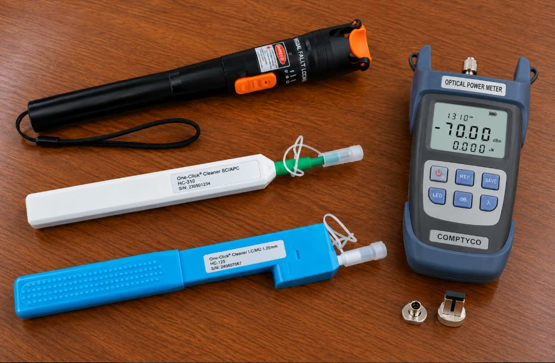

Tu revisión de la semana
Haz tu autochequeo
Revisa que lleves todo contigo y responde el formulario oficial, una vez por semana.
El formulario revisa 73 puntos:
- Herramientas de fibra óptica y medición
- Herramientas y equipos de trabajo
- Documentos y vehículo
- Equipos de altura y protección (EPP)
Complemento · Recordatorio
Videos de armado conector de campo
Ya sabes armar el conector de campo: aquí se te recuerda el procedimiento con videos de tus compañeros. Cada semana se suma el video de un técnico.
Complemento · Procedimiento
Paso a paso del armado
Conector mecánico SC/APC. Elige el tipo de conector que vas a armar.
Después del armado
Un conector armado no está listo hasta que lo pruebas. Estos pasos van después del armado, según el manual.
1. Identifica el puerto
- Una vez armado el conector, identifica el puerto óptico asignado en el punto de terminación: NAP, FAT o CTO. Debe estar indicado en la orden de trabajo.
- Verifica que el puerto indicado esté disponible (libre).
- Una vez confirmado, limpia el conector con OneClick tradicional o con OneClick tipo Z y conecta el conector.

2. Prueba con el VFL
El VFL es la linterna localizadora. Permite verificar la continuidad y la correcta alineación del conector.
- Un conector puede parecer bien armado y estar malo. Pruébalo con el VFL antes de dejarlo instalado.
- Si no hay continuidad o la alineación no es correcta, el conector quedó mal: ármalo de nuevo.

3. Mide la potencia óptica
Después de realizar la conexión, mide y valida la potencia óptica con el power meter, en la longitud de onda de 1490 nm.
- La potencia debe estar dentro de los rangos aceptables para garantizar un buen desempeño del servicio.
- En la CTO o NAP, la potencia no debe ser menor que: −25 dBm en Red VTR, −26 dBm en Red Claro y −24 dBm en Red Neutra.
- No debe existir una diferencia mayor a 2 dB entre la caja terminal óptica y la ONT. En una instalación domiciliaria, la pérdida del drop más la de los conectores tampoco debe superar 2 dB.

4. Si la potencia sale baja
Muchas veces el problema no es el conector: es suciedad.
- Limpia el conector y el puerto con OneClick tradicional o con OneClick tipo Z. Se debe limpiar siempre, aunque el conector venga sellado y embalado.
- Vuelve a medir con el power meter.
- Si sigue baja, prueba el conector con el VFL.
5. Evidencia si debes escalar
Si el servicio no funciona o la CTO está defectuosa, estas son las fotos que se piden:
- Foto de la potencia en la CTO. Debe mostrar el ID de la CTO (etiqueta), el conector del instrumento en la CTO, la banda de medición (1490 nm), el valor medido en dBm, y la georreferencia, fecha y hora.
- Foto de la potencia después del cable drop.
- Foto de la potencia desde la ONT.
6. Cuida tus equipos: limpieza y tapas
Esto debe quedarte muy claro: la limpieza es lo primordial.
- La limpieza de los sensores y emisores del VFL, los OneClick y el power meter es fundamental para que funcionen bien.
- Cuida sus tapas: aseguran la vida útil de estas herramientas.
- Si en la auditoría las tapas no están presentes, es un incumplimiento.
